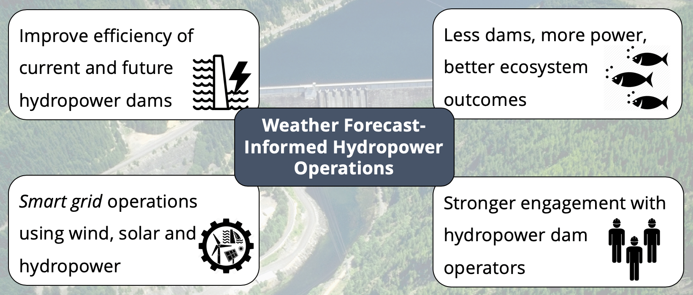
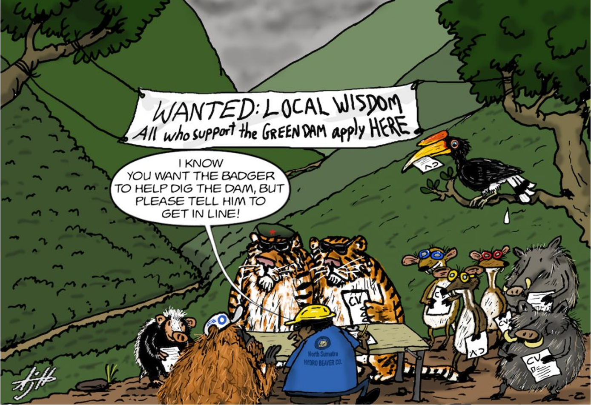
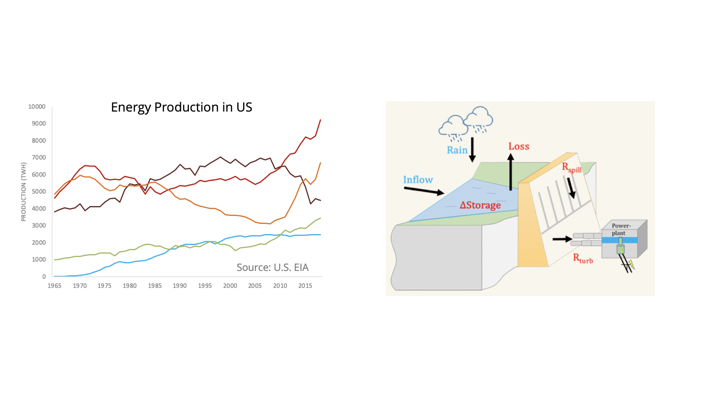
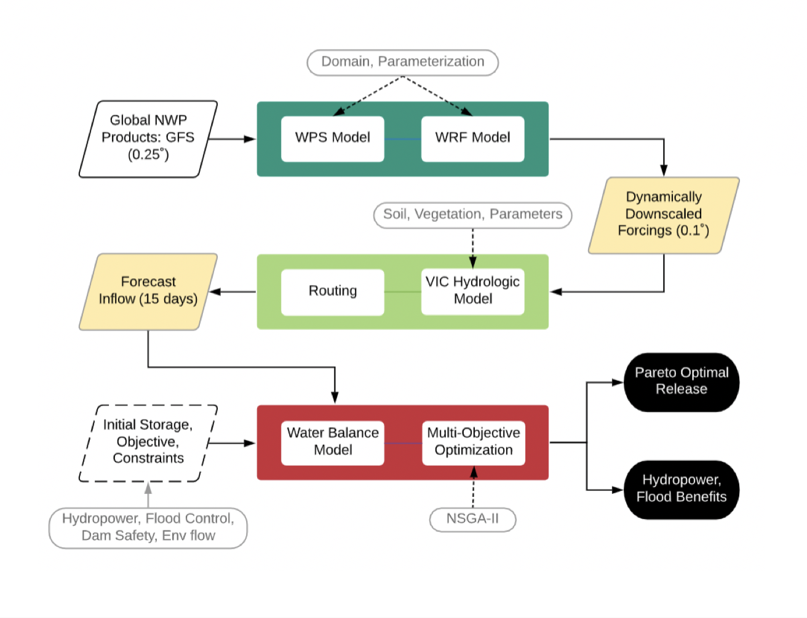
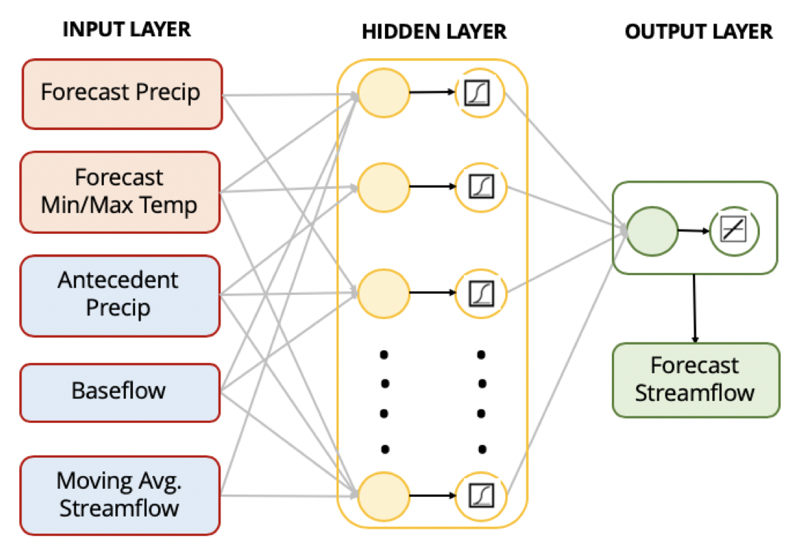
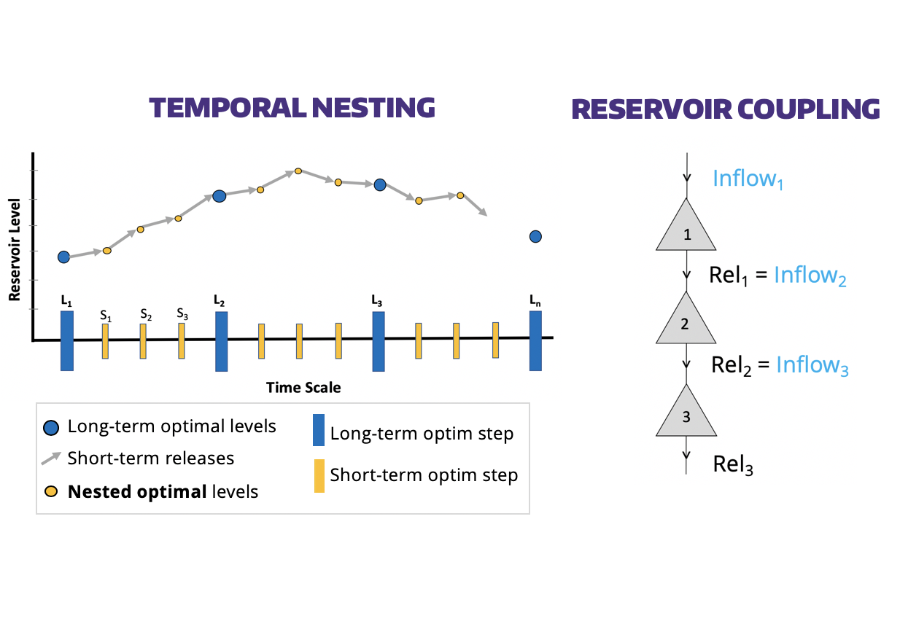
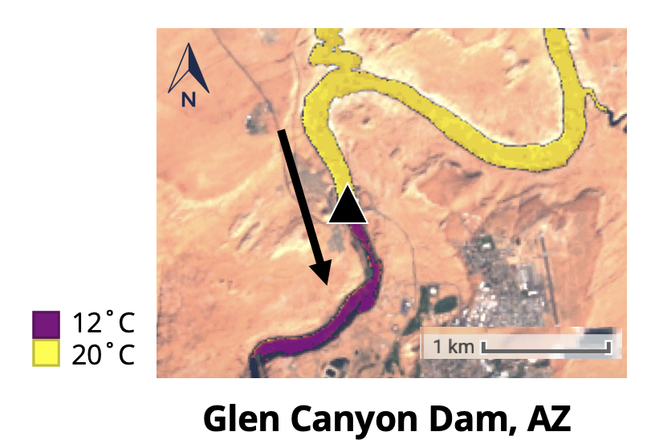
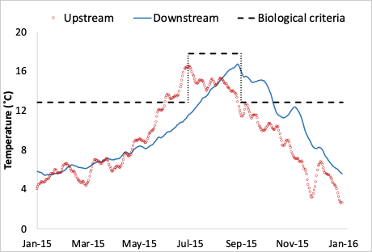

Vision
Imagine a world powered with energy generated from clean and sustainable sources, a world where we don't have to worry about harming the environment or drastically changing the climate. It is my firm believe that access to clean energy using the available resources is very much attainable and that is the vision I work towards.
Overview
The arguments for or against building dams, particularly hydropower dams, are plenty.
Dams now contribute to more than 16% of world’s energy needs and 12-16% of global food
production. Hydropower dams have served as a lifeline for generating energy, guarding against extreme
floods and serving a steadily increasing water demand.
Clean Energy Research presents engineering solutions towards improving the efficiency of
reservoir operations for hydropower generation, without compromising flood safety, ecological biodiversity, and other operating purposes.

Components
1. Value of Short-term Weather Forecasts in Improving Hydropower
The world has witnessed an upsurge in the construction of dams in the past century and will continue to do so in the
foreseeable future to serve a range of economic, environmental, and social benefits. Dams now contribute to more than
16% of the world’s energy needs and 12-16% of global food production. As demand for these critical resources rises with
population expected to cross 9.8 billion by 2050, dams require scientifically intelligent and environmentally more
responsible operation and management to ensure safe functioning and continued productive use.

This component presents engineering solutions towards improving the efficiency of reservoir operations for hydropower
generation. Here we combine optimization, weather forecasts and simulation models for dynamic management of water resources.
The research has demonstrated clearly that the currently available weather
forecasts from NWP models have a lot to offer to address energy security.

The next challenge is to revisit the conventional
operating policy and operate based on an improved advisory that makes hydropower generation more efficient
(more power with same or less impounded water) with better ecosystem outcomes.
2. Computationally Efficient, Skillful and Globally Scalable Reservoir Inflow Forecasting
In the next component towards mainstreaming forecast-based reservoir operations, a generic and scalable scheme is proposed
for forecasting reservoir inflow. The forecasted inflow is then used to optimize reservoir operations for
hydropower maximization. Short-term weather forecasts and antecedent hydrological variables were inputs to a
three-layered hydrologically-relevant Artificial Neural Network (ANN) to forecast inflow for 7-days of lead-time.
Application of the scheme was demonstrated over 23 dams in U.S. with varying hydrological characteristics and climate regimes.

This study reinforced the potential of a numerically efficient and skillful reservoir inflow forecasting scheme to address water-energy security challenge
3. Forecast-informed Hydropower Optimization at Long and Short-time Scales for Multi-Dam Networks
The following question is whether the proposed approach can be scaled up to real-life dam systems which usually occur as network of multiple dams.
This study presents a scheme for co-optimizing the long-term (seasonal) reservoir operating objectives with the short-term (daily) objectives
for multi-dam networks to maximize hydropower generation.
Long-term optimal reservoir storage provides temporal space to optimize operation of the dams at short-term based on forecasted reservoir inflow.

We found that there is significant additional benefit to hydropower generation by co-optimizing the operations for the dam network as a whole
based on short- and long-term forecasted reservoir inflow.
4. Ecosystem-safe Hydropower Operations
While we can maximize hyropower using optimization, for ecologically-safer energy production, minimizing harmful impacts and balancing multiple water needs is an integral component. One particularly harmful effect not managed explicitly by hydropower operations is thermal destabilization of downstream waters. To demonstrate that the thermal destabilization by hydropower dams can be managed while maximizing energy production, we modelled thermal change in downstream waters as a function of decision variables for hydropower operation.

5. Predicting Thermal Impact of Future Hydropower Dams
Next, we present a global study to map the impact of planned hydropower dams on the thermal regime of the river system. An assessment of hundreds of global planned hydropower dams revealed that the vast majority will likely reduce the peak temperatures of downstream rivers.
6. Decision Support System for Smart Dam Operations
In this section, a web-based open-source decision support system (DSS) was developed to facilitate real-world engagement
with dam-operating agencies in the decision-making process involving atmospheric modeling, hydrologic modeling, and web technology.
The iDDEA - Intelligent Dam Decisions and Assessment system is operational currently for Detroit Dam located in Oregon.